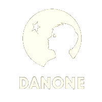
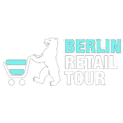
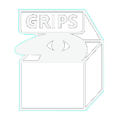
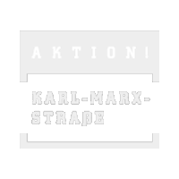

Hello! We’re a Berlin-based retail consultancy
centred on the concept of ‘retail curation’.
In other words, we deliver concepts to fulfil
corporate branding and communication strategies in retail environments.
Our speciality is to engage art and new technologies
into brick-and-mortar stores to enrich the consumer
experience.
Our Services
We impart our knowledge of retail and general trends in the form of trend reports, targeted analyses and custom-made Berlin trend tours. Our tours help reflect on the current Zeitgeist, understand global emerging trends and perceive future habits and technology.
Retail / Concept Design
We are ‘brandscapists’. We see brick-and-mortar spaces as the best opportunity for consumers to experience brands in a three-dimensional form, with all their senses. As both designers and artists, we make use of these unique settings by crafting retail concepts that are truly experiential and playful.
ELEMENTS
A PHYGITAL DANCE-TECH WORKSHOP FOR BUSINESS
ELEMENTS brings the creative experience of Dance together with the innovative character of neurosensing and motion tracking technology.
Through the use of a Brain-Computer interface developed by award-winning start-up, Neurofox, participants in the workshop are able to generate in real time unique visuals from their own brain waves and sounds from the movement of their bodies. This art-tech workshop mixes the physical and digital into an immersive phygital experience.
Elements has been designed to develop the potential we all hold for creativity and collective work. It also builds on participants’ intuitive and rational ways of interconnecting to ultimately change their working behaviour and environment.
The first workshops were given to Danone as part of The London Business School corporate development program, and Toyota, in collaboration with Trendwolves.
Through the use of a Brain-Computer interface developed by award-winning start-up, Neurofox, participants in the workshop are able to generate in real time unique visuals from their own brain waves and sounds from the movement of their bodies. This art-tech workshop mixes the physical and digital into an immersive phygital experience.
Elements has been designed to develop the potential we all hold for creativity and collective work. It also builds on participants’ intuitive and rational ways of interconnecting to ultimately change their working behaviour and environment.
The first workshops were given to Danone as part of The London Business School corporate development program, and Toyota, in collaboration with Trendwolves.
Our works in the past years have been developed for:





José-Fernando Andrade
Interdisciplinary Artist & Spatial Designer
Colombian-born José-Fernando Andrade has led a versatile career as a spatial designer and dancer-director. Following Integrated Arts studies in Colombia, he worked on architecture and large-scale scenography projects whilst developing his own acclaimed dance-theatre pieces.
In 2009 he moved to Berlin, working for design and marketing consultancies, whilst conducting dance-theatre workshops for both public and private institutions.
Stemming from his passion for new technologies, he recently founded an innovation lab, which connects art with sensing technologies to create immersive experiences.
In 2009 he moved to Berlin, working for design and marketing consultancies, whilst conducting dance-theatre workshops for both public and private institutions.
Stemming from his passion for new technologies, he recently founded an innovation lab, which connects art with sensing technologies to create immersive experiences.
Dr. Jessica Bush
Retail Expert
Born and raised in France in a French-Caribbean-English family, Jessica lived in the U.K. for over 11 years. There she conducted a doctoral research on ‘The Strategic Use of Art, Architecture and Design in High-end Fashion Retail’ (2009) – the first lengthystudy on this subject - making her an expert on the development of art within retail environments.
Since completing her Ph.D., Jessica has worked as a lecturer, strategist, researcher and trend analyst for cultural organisations, trend consultancies, advertising agencies and architectural practices in London, Berlin and Paris.
Since completing her Ph.D., Jessica has worked as a lecturer, strategist, researcher and trend analyst for cultural organisations, trend consultancies, advertising agencies and architectural practices in London, Berlin and Paris.